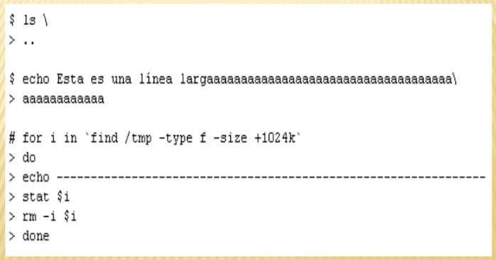

Guarda el prompt secundario. Este es el que se presenta cuando el shell no puede interpretar lo que se ha escrito hasta el momento. Normalmente el shell interpreta lo tecleado cuando se pulsa retorno. En caso de que no se halla completado una estructura interpretable bash muestra el prompt secundario, que por defecto es "> ". Para forzar a que bash no interprete algo después del retorno se escribe el caracter ``\'' antes del retorno.
Ejemplo:
En este ejemplo se muestra como se emplean las estructuras de control de bash, particularmente para un lazo tipo for. Como ya se ha mencionado existen otras estructuras de las cuales se podrá encontrar información en el manual de bash. Esta secuencia de código permite buscar recursivamente en el directorio /tmp todos los ficheros regulares cuyo tamaño exceda 1M y para cada uno de ellos se ejecutan los comandos stat y rm en forma interactiva. También se imprimen líneas divisorias.
Conoce más variables del entorno Bash: